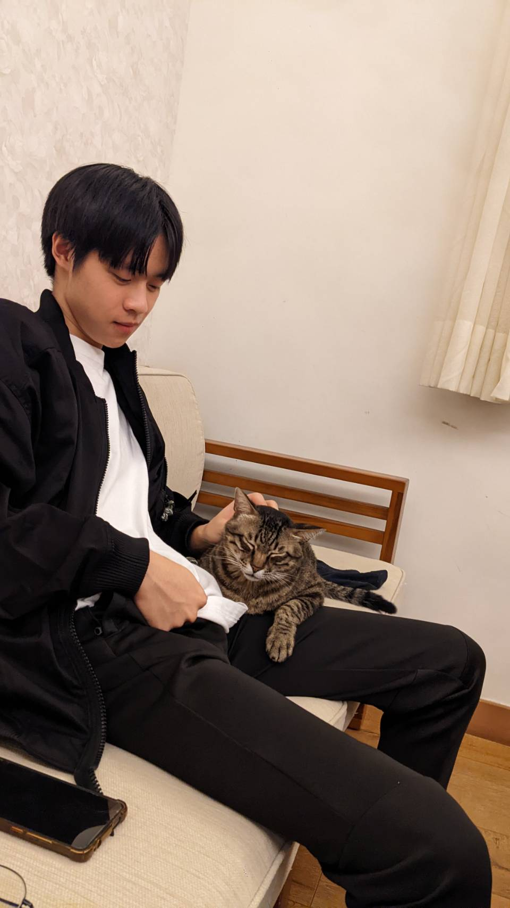

About Me

姓名:李奇彧 LI,CHI-YU
體重:53kg
身高:173cm
生日:2003/03/04
#人們都把視野的極限當成世界的極限——叔本華 #人生最困難的事情是認識自己。——特萊斯姓名:李奇彧 LI,CHI-YU
體重:53kg
身高:173cm
生日:2003/03/04
#人們都把視野的極限當成世界的極限——叔本華 #人生最困難的事情是認識自己。——特萊斯
我喜歡閱讀，閱讀應該是我培養起來的第一個興趣，從國小時午休都跑到圖書館看漫畫， 或著到國中時沉迷武俠小說，再到現在開始看國外文學，文字的藝術總是令我深深著迷， 常常沉浸在書海而忘了時間

在升國中之前家裡都禁止著手機、電腦等等遊戲，，一直到升國中才有了第一支手機，當 時又剛好被同學找去玩，也從此一發不可收拾。我很享受遊戲裡各種天馬行孔的想像，讓 我有種小說化為真實的感覺，更喜歡跟朋友們憶起玩時的快樂

排球是在我國中時開始打的，當時也只是體育課的內容而已，沒想到打著打著就一路打到了 現在。我很享受跟大家在場上一起拚搏，一起努力